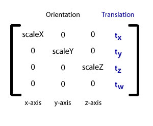

| Paket | flash.geom |
| Klasse | public class Matrix3D |
| Vererbung | Matrix3D |
| Sprachversion: | ActionScript 3.0 |
| Laufzeitversionen: | Flash Player 10, AIR 1.5 |
In einer Matrix können mehrere Transformationen kombiniert und in einem Vorgang auf ein 3D-Anzeigeobjekt angewendet werden. Eine Matrix kann zum Beispiel auf dreidimensionale Koordinaten angewendet werden, um eine Drehung gefolgt von einer Versetzung auszuführen.
Wenn Sie die z-Eigenschaft oder eine der Drehungs- oder Skalierungseigenschaften eines Anzeigeobjekts explizit einstellen, wird automatisch ein entsprechendes Matrix3D-Objekt erstellt.
Der Zugriff auf das Matrix3D-Objekt eines 3D-Anzeigeobjekts erfolgt über die transform.matrix3d-Eigenschaft. 2D-Objekte weisen kein Matrix3D-Objekt auf.
Der Wert der z-Eigenschaft eines 2D-Objekts ist null und der Wert seiner matrix3D-Eigenschaft ist null.
Hinweis: Wenn ein Matrix3D-Objekt zwei verschiedenen Anzeigeobjekten zugewiesen wird, wird ein Laufzeitfehler ausgegeben.
Die Matrix3D-Klasse verwendet eine quadratische 4x4-Matrix: eine Tabelle mit vier Zeilen und vier Spalten von Zahlen, die die Daten für die Transformation enthalten. Die ersten drei Zeilen der Matrix enthalten die Daten für die dreidimensionalen Achsen (x,y,z). Die Versetzungsinformationen befinden sich in der letzten Spalte. Die Daten für Ausrichtung und Skalierung befinden sich in den ersten drei Spalten. Die Skalierungsfaktoren sind die diagonalen Zahlen in den ersten drei Spalten. Dies ist eine Darstellung von Matrix3D-Elementen:

Sie brauchen keine Matrizenrechnung zu beherrschen, um mit der Matrix3D-Klasse zu arbeiten. Sie bietet spezifische Methoden, die Transformationen und Projektionen vereinfachen, zum Beispiel die appendTranslation()-, appendRotation()- und interpolateTo()-Methode. Außerdem können Sie mithilfe der decompose()- und recompose()-Methode oder der rawData-Eigenschaft auf die zugrunde liegenden Matrizenelemente zugreifen.
Die Eigenschafen für die Achsendrehung von Anzeigeobjekten können zwischengespeichert werden. Das ermöglicht das separate Drehen der Achsen sowie die Verwaltung der verschiedenen Drehungskombinationen. Wird eine Methode eines Matrix3D-Objekts aufgerufen, um ein Anzeigeobjekt zu transformieren, so wird der Drehungszwischenspeicher des Objekts ungültig.
Verwandte API-Elemente
flash.geom.Transform
flash.geom.PerspectiveProjection
flash.geom.Vector3D
flash.geom.Orientation3D
flash.geom.Utils3D
flash.geom.Matrix
 Vererbte öffentliche Eigenschaften ausblenden
Vererbte öffentliche Eigenschaften ausblenden Vererbte öffentliche Eigenschaften anzeigen
Vererbte öffentliche Eigenschaften anzeigen| Eigenschaft | Definiert von | ||
|---|---|---|---|
 | constructor : Object
Ein Verweis auf das Klassenobjekt oder die Konstruktorfunktion für eine angegebene Objektinstanz. | Object | |
| determinant : Number [schreibgeschützt]
Eine Zahl, die festlegt, ob eine Matrix invertierbar ist. | Matrix3D | ||
| position : Vector3D
Ein Vector3D-Objekt, das die Position, die 3D-Koordinate (x, y, z) eines Anzeigeobjekts innerhalb des Bezugsrahmens der Transformation, enthält. | Matrix3D | ||
| rawData : Vector.<Number>
Ein Vektor von 16 Zahlen, wobei jeweils vier Elemente eine Spalte einer 4x4-Matrix bilden. | Matrix3D | ||
| Methode | Definiert von | ||
|---|---|---|---|
Erstellt ein Matrix3D-Objekt. | Matrix3D | ||
Hängt die Matrix an, indem ein anderes Matrix3D-Objekt mit dem aktuellen Matrix3D-Objekt multipliziert wird. | Matrix3D | ||
Hängt eine inkrementelle Drehung an ein Matrix3D-Objekt an. | Matrix3D | ||
Hängt ein Matrix3D-Objekt durch inkrementelles Skalieren entlang der x-, y- und z-Achse an. | Matrix3D | ||
Hängt eine inkrementelle Versetzung, eine Neupositionierung entlang der x-, y- und z-Achsen, an ein Matrix3D-Objekt an. | Matrix3D | ||
Gibt ein neues Matrix3D-Objekt zurück, das eine genaue Kopie des aktuellen Matrix3D-Objekts ist. | Matrix3D | ||
Kopiert ein Vector3D-Objekt in eine bestimmte Spalte des aufrufenden Matrix3D-Objekts. | Matrix3D | ||
Kopiert die angegebene Spalte des aufrufenden Matrix3D-Objekts in das Vector3D-Objekts. | Matrix3D | ||
Kopiert alle Matrixdaten aus dem Matrix3D-Quellobjekt in das aufrufende Matrix3D-Objekt. | Matrix3D | ||
Kopiert alle Vektordaten aus dem Vector-Quellobjekt in das aufrufende Matrix3D-Objekt. | Matrix3D | ||
Kopiert alle Matrixdaten aus dem aufrufenden Matrix3D-Objekt in den angegebenen Vektor. | Matrix3D | ||
Kopiert ein Vector3D-Objekt in eine bestimmte Zeile des aufrufenden Matrix3D-Objekts. | Matrix3D | ||
Kopiert die angegebene Zeile des aufrufenden Matrix3D-Objekts in das Vector3D-Objekts. | Matrix3D | ||
| Matrix3D | |||
Gibt die Versetzungs-, Drehungs- und Skalierungseinstellungen der Transformationsmatrix als Vektor dreier Vector3D-Objekte zurück. | Matrix3D | ||
Verwendet die Transformationsmatrix ohne deren Versetzungselemente, um ein Vector3D-Objekt von einer Raumkoordinate zu einer anderen zu transformieren. | Matrix3D | ||
|
Gibt an, ob für ein Objekt eine bestimmte Eigenschaft definiert wurde. | Object | |
Konvertiert die aktuelle Matrix in eine Identitäts- oder Einheitsmatrix. | Matrix3D | ||
[statisch]
Interpoliert die Versetzungs-, Drehungs- und Skalierungstransformation der einen Matrix in Richtung der Transformationen der Zielmatrix. | Matrix3D | ||
Interpoliert diese Matrix in Richtung der Versetzungs-, Drehungs- und Skalierungstransformationen der Zielmatrix. | Matrix3D | ||
Invertiert die aktuelle Matrix. | Matrix3D | ||
|
Gibt an, ob eine Instanz der Object-Klasse in der Prototypkette des Objekts vorhanden ist, das als Parameter angegeben wurde. | Object | |
Dreht das Anzeigeobjekt, sodass es auf eine bestimmte Position zeigt. | Matrix3D | ||
Stellt eine Matrix voran, indem das aktuelle Matrix3D-Objekt mit einem anderen Matrix3D-Objekt multipliziert wird. | Matrix3D | ||
Stellt einem Matrix3D-Objekt eine inkrementelle Drehung voran. | Matrix3D | ||
Stellt einem Matrix3D-Objekt eine inkrementelle Skalierungsänderung der x-, y- und z-Achse voran. | Matrix3D | ||
Stellt einem Matrix3D-Objekt eine inkrementelle Versetzung, eine Neupositionierung entlang der x-, y- und z-Achse voran. | Matrix3D | ||
|
Gibt an, ob die angegebene Eigenschaft vorhanden ist und durchlaufen werden kann. | Object | |
Legt die Einstellungen der Transformationsmatrix für die Versetzung, Drehung und Skalierung fest. | Matrix3D | ||
|
Legt die Verfügbarkeit einer dynamischen Eigenschaft für Schleifenoperationen fest. | Object | |
|
Gibt die Stringdarstellung dieses Objekts zurück, formatiert entsprechend den Konventionen des Gebietsschemas. | Object | |
|
Gibt das angegebene Objekt als String zurück. | Object | |
Verwendet die Transformationsmatrix zum Transformieren eines Vector3D-Objekts von einer Raumkoordinate zu einer anderen. | Matrix3D | ||
Verwendet die Transformationsmatrix zum Transformieren eines Zahlenvektors von einem Koordinatenraum in einen anderen. | Matrix3D | ||
Konvertiert das aktuelle Matrix3D-Objekt in eine Matrix, deren Zeilen und Spalten vertauscht sind. | Matrix3D | ||
|
Gibt den Grundwert des angegebenen Objekts zurück. | Object | |
determinant | Eigenschaft |
determinant:Number [schreibgeschützt] | Sprachversion: | ActionScript 3.0 |
| Laufzeitversionen: | Flash Player 10, AIR 1.5 |
Eine Zahl, die festlegt, ob eine Matrix invertierbar ist.
Ein Matrix3D-Objekt muss invertierbar sein. Mit der determinant-Eigenschaft können Sie sicherstellen, dass ein Matrix3D-Objekt invertierbar ist. Wenn die Determinante null ist, ist keine invertierte Matrix vorhanden. Wenn zum Beispiel eine ganze Zeile oder Spalte einer Matrix null ist oder zwei Zeilen oder Spalten gleich sind, ist die Determinante null. Die Determinante wird auch verwendet, um eine Reihe von Gleichungen zu lösen.
Nur eine quadratische Matrix, wie die Matrix3D-Klasse, hat eine Determinante.
Implementierung
public function get determinant():NumberVerwandte API-Elemente
position | Eigenschaft |
position:Vector3D| Sprachversion: | ActionScript 3.0 |
| Laufzeitversionen: | Flash Player 10, AIR 1.5 |
Ein Vector3D-Objekt, das die Position, die 3D-Koordinate (x, y, z) eines Anzeigeobjekts innerhalb des Bezugsrahmens der Transformation, enthält. Die position-Eigenschaft gewährt unmittelbaren Zugriff auf den Versetzungsvektor der Matrix des Anzeigeobjekts, ohne dass die Matrix zerlegt und wieder zusammengesetzt werden muss.
Mit der position-Eigenschaft können Sie auf die Versetzungselemente der Transformationsmatrix zugreifen und diese festlegen.
Implementierung
public function get position():Vector3D public function set position(value:Vector3D):voidVerwandte API-Elemente
rawData | Eigenschaft |
rawData:Vector.<Number>| Sprachversion: | ActionScript 3.0 |
| Laufzeitversionen: | Flash Player 10, AIR 1.5 |
Ein Vektor von 16 Zahlen, wobei jeweils vier Elemente eine Spalte einer 4x4-Matrix bilden.
Wird die rawData-Eigenschaft auf eine nicht invertierbare Matrix gesetzt, so wird eine Ausnahme ausgegeben. Das Matrix3D-Objekt muss invertierbar sein. Wenn Sie eine nicht-invertierbare Matrix benötigen, erstellen Sie eine Unterklasse des Matrix3D-Objekts.
Implementierung
public function get rawData():Vector.<Number> public function set rawData(value:Vector.<Number>):voidVerwandte API-Elemente
Matrix3D | () | Konstruktor |
public function Matrix3D(v:Vector.<Number> = null)| Sprachversion: | ActionScript 3.0 |
| Laufzeitversionen: | Flash Player 10, AIR 1.5 |
Erstellt ein Matrix3D-Objekt. Matrix3D-Objekte können mit einem Vektor von 16 Zahlen initialisiert werden, wobei jeweils vier Elemente eine Spalte darstellen. Nachdem das Matrix3D-Objekt erstellt wurde, können Sie mit der rawData-Eigenschaft auf seine Matrixelemente zugreifen.
Wenn kein Parameter definiert ist, erstellt der Konstruktor ein Identitäts- oder Einheits-Matrix3D-Objekt. In der Matrixschreibweise hat eine Identitätsmatrix einen Wert von eins für alle Elemente in der diagonalen Hauptposition und einen Wert von null für alle anderen Elemente. Der Wert der rawData-Eigenschaft einer Identitätsmatrix lautet 1,0,0,0,0,1,0,0,0,0,1,0,0,0,0,1. Der Positions- oder Versetzungswert der Identitätsmatrix lautet Vector3D(0,0,0), die Rotationseinstellung ist Vector3D(0,0,0) und der Skalenwert ist Vector3D(1,1,1).
v:Vector.<Number> (default = null) |
Verwandte API-Elemente
append | () | Methode |
public function append(lhs:Matrix3D):void| Sprachversion: | ActionScript 3.0 |
| Laufzeitversionen: | Flash Player 10, AIR 1.5 |
Hängt die Matrix an, indem ein anderes Matrix3D-Objekt mit dem aktuellen Matrix3D-Objekt multipliziert wird. Das Ergebnis kombiniert beide Matrixtransformationen. Sie können ein Matrix3D-Objekt mit vielen Matrizen multiplizieren. Das endgültige Matrix3D-Objekt enthält das Ergebnis aller Transformationen.
Die Matrixmultiplikation unterscheidet sich von der Matrixaddition. Die Matrixmultiplikation ist nicht kommutativ. Anders ausgedrückt, A mal B ist nicht gleich B mal A. Mit der append()-Methode wird die Multiplikation von links ausgeführt, das heißt, das lhs-Matrix3D-Objekt befindet sich links vom Multiplikationsoperator.
thisMatrix = lhs * thisMatrix;
Wenn die append()-Methode zum ersten Mal aufgerufen wird, nimmt sie eine Änderung relativ zum übergeordneten Raum vor. Nachfolgende Aufrufe sind relativ zum Referenzrahmen des angehängten Matrix3D-Objekts.
Die append()-Methode ersetzt die aktuelle Matrix durch die angehängte Matrix. Wenn Sie zwei Matrizen anhängen möchten, ohne die aktuelle Matrix zu ändern, kopieren Sie die aktuelle Matrix mithilfe der clone()-Methode und wenden dann die append()-Methode auf die Kopie an.
Parameter
lhs:Matrix3D — Die linke Matrix, die mit dem aktuellen Matrix3D-Objekt multipliziert wird.
|
Verwandte API-Elemente
appendRotation | () | Methode |
public function appendRotation(degrees:Number, axis:Vector3D, pivotPoint:Vector3D = null):void| Sprachversion: | ActionScript 3.0 |
| Laufzeitversionen: | Flash Player 10, AIR 1.5 |
Hängt eine inkrementelle Drehung an ein Matrix3D-Objekt an. Wenn das Matrix3D-Objekt auf ein Anzeigeobjekt angewendet wird, führt die Matrix die Drehung nach den anderen Transformationen im Matrix3D-Objekt aus.
Die Drehung eines Anzeigeobjekts wird durch eine Achse, einen inkrementellen Drehwinkel um die Achse und einen optionalen Drehpunkt als Mittelpunkt der Drehung des Objekts bestimmt. Die Achse kann in jede Richtung zeigen. Die üblichen Achsen sind X_AXIS (Vector3D(1,0,0)), Y_AXIS (Vector3D(0,1,0)) und Z_AXIS (Vector3D(0,0,1)). In der Luftfahrtterminologie wird die Drehung um die y-Achse als Gieren bezeichnet. Die Drehung um die x-Achse heißt Nicken. Die Drehung um die z-Achse wird als Rollen bezeichnet.
Die Transformationsreihenfolge ist von Bedeutung. Eine Drehung gefolgt von einer Versetzungstransformation erzeugt einen anderen Effekt als eine Versetzung gefolgt von einer Drehungstransformation.
Der Drehungseffekt ist nicht absolut. Er ist relativ zur aktuellen Position und Ausrichtung. Um absolute Änderungen der Transformationsmatrix vorzunehmen, verwenden Sie die recompose()-Methode. Die appendRotation()-Methode unterscheidet sich auch von der Achsendrehungseigenschaft des Anzeigeobjekts, zum Beispiel von der rotationX-Eigenschaft. Die Drehungseigenschaft wird immer vor einer Versetzung angewendet, während die appendRotation()-Methode relativ zu dem bereits in der Matrix Vorhandenen ausgeführt wird. Um sicherzustellen, dass Sie einen ähnlichen Effekt erzielen wie mit der Achsendrehungseigenschaft des Anzeigeobjekts, verwenden Sie die prependRotation-Methode, die die Drehung vor allen anderen Transformationen in der Matrix ausführt.
Wenn die Transformation der appendRotation()-Methode auf ein Matrix3D-Objekt eines Anzeigeobjekts angewendet wird, werden die zwischengespeicherten Werte der Drehungseigenschaft des Anzeigeobjekts ungültig.
Eine Möglichkeit, ein Anzeigeobjekt um einen bestimmten Punkt relativ zu seiner Position zu drehen, besteht darin, die Versetzung des Objekts auf den angegebenen Punkt festzulegen, das Objekt mithilfe der appendRotation-Methode zu drehen und das Objekt dann an die ursprüngliche Position zurückzuversetzen. Im folgenden Beispiel führt das myObject-3D-Anzeigeobjekt eine Drehung um die y-Achse um die Koordinate (10,10,0) aus.
myObject.z = 1;
myObject.transform.matrix3D.appendTranslation(10,10,0);
myObject.transform.matrix3D.appendRotation(1, Vector3D.Y_AXIS);
myObject.transform.matrix3D.appendTranslation(-10,-10,0);
Parameter
degrees:Number — Der Drehungsgrad.
| |
axis:Vector3D — Die Drehachse oder -richtung. Die üblichen Achsen sind X_AXIS (Vector3D(1,0,0)), Y_AXIS (Vector3D(0,1,0)) und Z_AXIS (Vector3D(0,0,1)). Dieser Vektor sollte eine Länge von eins haben.
| |
pivotPoint:Vector3D (default = null) |
Verwandte API-Elemente
appendScale | () | Methode |
public function appendScale(xScale:Number, yScale:Number, zScale:Number):void| Sprachversion: | ActionScript 3.0 |
| Laufzeitversionen: | Flash Player 10, AIR 1.5 |
Hängt ein Matrix3D-Objekt durch inkrementelles Skalieren entlang der x-, y- und z-Achse an. Wenn das Matrix3D-Objekt auf ein Anzeigeobjekt angewendet wird, führt die Matrix die Skalierungsänderungen nach den anderen Transformationen im Matrix3D-Objekt aus. Der Standardskalierungsfaktor ist (1.0, 1.0, 1.0).
Die Skalierung ist als Satz dreier inkrementeller Änderungen entlang der drei Achsen (x, y, z) definiert. Jede Achse kann mit einer anderen Zahl multipliziert werden. Wenn Skalierungsänderungen auf ein Anzeigeobjekt angewendet werden, erhöht oder verringert sich dessen Größe. Beispiel: Wird die x-, y- und z-Achse auf „2“ gesetzt, so wird die Größe verdoppelt. Dagegen wird sie halbiert wird, wenn die Achsen auf 0.5 gesetzt werden. Um sicherzustellen, dass sich die Skalierungstransformation nur auf eine bestimmte Achse auswirkt, setzen Sie die anderen Parameter auf eins. Der Parameter „1“ bedeutet, dass keine Skalierung an der betroffenen Achse stattfindet.
Die appendScale()-Methode kann sowohl zum Ändern der Größe als auch zum Verwalten von Verzerrungen, zum Beispiel Strecken oder Stauchen eines Anzeigeobjekts, oder zum Zoomen verwendet werden. Skalierungstransformationen werden während der Drehung und Versetzung eines Anzeigeobjekts automatisch durchgeführt.
Die Transformationsreihenfolge ist von Bedeutung. Eine Größenänderung gefolgt von einer Versetzungstransformation erzeugt einen anderen Effekt als eine Versetzung gefolgt von einer Größentransformation.
Parameter
xScale:Number — Ein Multiplikator zur Skalierung des Objekts entlang der x-Achse.
| |
yScale:Number — Ein Multiplikator zur Skalierung des Objekts entlang der y-Achse.
| |
zScale:Number — Ein Multiplikator zur Skalierung des Objekts entlang der z-Achse.
|
Verwandte API-Elemente
appendTranslation | () | Methode |
public function appendTranslation(x:Number, y:Number, z:Number):void| Sprachversion: | ActionScript 3.0 |
| Laufzeitversionen: | Flash Player 10, AIR 1.5 |
Hängt eine inkrementelle Versetzung, eine Neupositionierung entlang der x-, y- und z-Achsen, an ein Matrix3D-Objekt an. Wenn das Matrix3D-Objekt auf ein Anzeigeobjekt angewendet wird, führt die Matrix die Versetzungsänderungen nach den anderen Transformationen im Matrix3D-Objekt aus.
Die Versetzung ist als ein Satz von drei inkrementellen Änderung entlang der drei Achsen (x,y,z) definiert. Wenn die Transformation auf ein Anzeigeobjekt angewendet wird, bewegt sich das Anzeigeobjekt von seiner aktuellen Position entlang der x-, y- und z-Achse, wie in den Parametern angegeben. Damit die Versetzung nur eine bestimmte Achse betrifft, setzen Sie die anderen Parameter auf null. Der Parameter „0“ bedeutet, dass keine Veränderung an der betroffenen Achse stattfindet.
Die Änderungen durch Versetzung sind nicht absolut. Sie sind relativ zur aktuellen Position und Ausrichtung der Matrix. Um absolute Änderungen der Transformationsmatrix vorzunehmen, verwenden Sie die recompose()-Methode. Die Transformationsreihenfolge ist ebenfalls von Bedeutung. Eine Versetzung gefolgt von einer Drehungstransformation erzeugt einen anderen Effekt als eine Drehung gefolgt von einer Versetzung.
Parameter
x:Number — Eine inkrementelle Versetzung entlang der x-Achse.
| |
y:Number — Eine inkrementelle Versetzung entlang der y-Achse.
| |
z:Number — Eine inkrementelle Versetzung entlang der z-Achse.
|
Verwandte API-Elemente
clone | () | Methode |
public function clone():Matrix3D| Sprachversion: | ActionScript 3.0 |
| Laufzeitversionen: | Flash Player 10, AIR 1.5 |
Gibt ein neues Matrix3D-Objekt zurück, das eine genaue Kopie des aktuellen Matrix3D-Objekts ist.
RückgabewerteMatrix3D — Ein neues Matrix3D-Objekt, das eine genaue Kopie des aktuellen Matrix3D-Objekts ist.
|
copyColumnFrom | () | Methode |
public function copyColumnFrom(column:uint, vector3D:Vector3D):void| Sprachversion: | ActionScript 3.0 |
| Laufzeitversionen: | Flash Player 11, AIR 3.0, Flash Lite 4 |
Kopiert ein Vector3D-Objekt in eine bestimmte Spalte des aufrufenden Matrix3D-Objekts.
Parameter
column:uint — Die Zielspalte der Kopie.
| |
vector3D:Vector3D — Das Vector3D-Objekt, aus dem die Daten kopiert werden.
|
copyColumnTo | () | Methode |
public function copyColumnTo(column:uint, vector3D:Vector3D):void| Sprachversion: | ActionScript 3.0 |
| Laufzeitversionen: | Flash Player 11, AIR 3.0, Flash Lite 4 |
Kopiert die angegebene Spalte des aufrufenden Matrix3D-Objekts in das Vector3D-Objekts.
Parameter
column:uint — Die Spalte, aus der die Daten kopiert werden.
| |
vector3D:Vector3D — Das Vector3D-Zielobjekt der Kopie.
|
copyFrom | () | Methode |
public function copyFrom(sourceMatrix3D:Matrix3D):void| Sprachversion: | ActionScript 3.0 |
| Laufzeitversionen: | Flash Player 11, AIR 3.0, Flash Lite 4 |
Kopiert alle Matrixdaten aus dem Matrix3D-Quellobjekt in das aufrufende Matrix3D-Objekt.
Parameter
sourceMatrix3D:Matrix3D — Das Matrix3D-Objekt, aus dem die Daten kopiert werden.
|
copyRawDataFrom | () | Methode |
public function copyRawDataFrom(vector:Vector.<Number>, index:uint = 0, transpose:Boolean = false):void| Sprachversion: | ActionScript 3.0 |
| Laufzeitversionen: | Flash Player 11, AIR 3.0, Flash Lite 4 |
Kopiert alle Vektordaten aus dem Vector-Quellobjekt in das aufrufende Matrix3D-Objekt. Der optionale index-Parameter ermöglicht Ihnen, eine beliebige Startposition im Vektor auszuwählen.
Parameter
vector:Vector.<Number> — Das Vector-Objekt, aus dem die Daten kopiert werden.
| |
index:uint (default = 0) | |
transpose:Boolean (default = false) |
copyRawDataTo | () | Methode |
public function copyRawDataTo(vector:Vector.<Number>, index:uint = 0, transpose:Boolean = false):void| Sprachversion: | ActionScript 3.0 |
| Laufzeitversionen: | Flash Player 11, AIR 3.0, Flash Lite 4 |
Kopiert alle Matrixdaten aus dem aufrufenden Matrix3D-Objekt in den angegebenen Vektor. Der optionale index-Parameter ermöglicht Ihnen, eine beliebige Ziel-Startposition im Vektor auszuwählen.
Parameter
vector:Vector.<Number> — Das Vector-Objekt, in das die Daten kopiert werden.
| |
index:uint (default = 0) | |
transpose:Boolean (default = false) |
copyRowFrom | () | Methode |
public function copyRowFrom(row:uint, vector3D:Vector3D):void| Sprachversion: | ActionScript 3.0 |
| Laufzeitversionen: | Flash Player 11, AIR 3.0, Flash Lite 4 |
Kopiert ein Vector3D-Objekt in eine bestimmte Zeile des aufrufenden Matrix3D-Objekts.
Parameter
row:uint — Die Zeile, in die die Daten kopiert werden.
| |
vector3D:Vector3D — Das Vector3D-Objekt, aus dem die Daten kopiert werden.
|
copyRowTo | () | Methode |
public function copyRowTo(row:uint, vector3D:Vector3D):void| Sprachversion: | ActionScript 3.0 |
| Laufzeitversionen: | Flash Player 11, AIR 3.0, Flash Lite 4 |
Kopiert die angegebene Zeile des aufrufenden Matrix3D-Objekts in das Vector3D-Objekts.
Parameter
row:uint — Die Zeile, aus der die Daten kopiert werden.
| |
vector3D:Vector3D — Das Vector3D-Objekt, in das die Daten kopiert werden.
|
copyToMatrix3D | () | Methode |
decompose | () | Methode |
public function decompose(orientationStyle:String = "eulerAngles"):Vector.<Vector3D>| Sprachversion: | ActionScript 3.0 |
| Laufzeitversionen: | Flash Player 10, AIR 1.5 |
Gibt die Versetzungs-, Drehungs- und Skalierungseinstellungen der Transformationsmatrix als Vektor dreier Vector3D-Objekte zurück. Das erste Vector3D-Objekt enthält die Versetzungselemente. Das zweite Vector3D-Objekt enthält die Drehungselemente. Das dritte Vector3D-Objekt enthält die Skalierungselemente.
Einige Matrix3D-Methoden, beispielsweise die interpolateTo()-Methode, führen die Transformation aus, indem sie die Matrix automatisch zerlegen und wieder zusammensetzen.
Um die Transformation der Matrix mithilfe eines absoluten übergeordneten Referenzrahmens zu ändern, rufen Sie die Einstellungen mithilfe der decompose()-Methode ab und nehmen die entsprechenden Änderungen vor. Sie können das Matrix3D-Objekt auf die geänderte Transformation setzen, indem Sie die recompose()-Methode verwenden.
Der Parameter der decompose()-Methode legt den Ausrichtungsstil für die Transformation fest. Die Standardausrichtung ist eulerAngles. Dabei wird die Ausrichtung durch einen separaten Drehwinkel pro Achse festgelegt. Die Drehungen folgen aufeinander und ändern die Achsen der jeweils anderen Drehungen nicht. Die Achsendrehungseigenschaften des Anzeigeobjekts bewirken eine Transformation des Ausrichtungsstils gemäß Eulerschen Winkeln. Weitere Optionen für den Ausrichtungsstil sind axisAngle und quaternion. Die Achsenwinkelausrichtung verwendet zur Bestimmung der Ausrichtung eine Kombination von Achse und Winkel. Die Achse, um die sich das Objekt dreht, ist ein Einheitsvektor, der die Richtung darstellt. Der Winkel stellt die Stärke der Drehung um den Vektor dar. Die Richtung bestimmt auch, wohin das Anzeigeobjekt zeigt und der Winkel bestimmt, wo oben liegt. Die appendRotation()- und prependRotation()-Methode verwendet die Achsenwinkelausrichtung. Die Quaternionausrichtung verwendet komplexe Zahlen und das vierte Element eines Vektors. Die drei Drehsachsen (x, y, z) und der Drehwinkel (w) stellen die Ausrichtung dar. Die interpolate()-Methode verwendet Quaternionen.
Parameter
orientationStyle:String (default = "eulerAngles")eulerAngles (Konstante EULER_ANGLES), axisAngle (Konstante AXIS_ANGLE) und quaternion (Konstante QUATERNION). Weitere Informationen zu den verschiedenen Ausrichtungsstilen finden Sie im Abschnitt über die geom.Orientation3D-Klasse.
|
Vector.<Vector3D> — Ein Vektor aus drei Vector3D-Objekten, die jeweils die Einstellungen für die Versetzung, Drehung und Skalierung enthalten.
|
Verwandte API-Elemente
Beispiel ( Verwendung dieses Beispiels )
decompose()- und recompose()-Methode verwendet, damit sich die Ellipse horizontal ausdehnt, während sie sich auf den Fluchtpunkt zubewegt. Das erste von der decompose()-Methode zurückgegebene Vector3D-Objekt enthält die Koordinaten für die Versetzung. Das dritte Vector3D-Objekt enthält die Skalierungseinstellungen. Die incrementBy()-Methode des Vector3D-Objekts inkrementiert die absoluten Versetzungs- und Skalierungseinstellungen der Matrix.
package {
import flash.display.MovieClip;
import flash.display.Shape;
import flash.geom.*;
import flash.events.Event;
public class Matrix3DdecomposeExample extends MovieClip {
private var ellipse:Shape = new Shape();
public function Matrix3DdecomposeExample():void {
ellipse.x = (this.stage.stageWidth / 2);
ellipse.y = (this.stage.stageHeight - 40);
ellipse.z = 1;
ellipse.graphics.beginFill(0xFF0000);
ellipse.graphics.lineStyle(2);
ellipse.graphics.drawEllipse(0, 0, 50, 40);
ellipse.graphics.endFill();
addChild(ellipse);
ellipse.addEventListener(Event.ENTER_FRAME, enterFrameHandler);
}
private function enterFrameHandler(e:Event):void {
var v3:Vector.<Vector3D> = new Vector.<Vector3D>(3);
v3 = ellipse.transform.matrix3D.decompose();
v3[0].incrementBy(new Vector3D(0,0,1));
v3[2].incrementBy(new Vector3D(0.01,0,0));
ellipse.transform.matrix3D.recompose(v3);
}
}
}
deltaTransformVector | () | Methode |
public function deltaTransformVector(v:Vector3D):Vector3D| Sprachversion: | ActionScript 3.0 |
| Laufzeitversionen: | Flash Player 10, AIR 1.5 |
Verwendet die Transformationsmatrix ohne deren Versetzungselemente, um ein Vector3D-Objekt von einer Raumkoordinate zu einer anderen zu transformieren. Das zurückgegebene Vector3D-Objekt enthält die neuen Koordinaten nach Anwendung der Drehungs- und Skalierungsinformationen. Wendet die deltaTransformVector()-Methode eine Matrix an, die nur eine Versetzungstransformation enthält, so ist das zurückgegebene Vector3D-Objekt mit dem ursprünglichen Vector3D-Objekt identisch.
Sie können die deltaTransformVector()-Methode verwenden, um zu bewirken, dass ein Anzeigeobjekt in einem Koordinatenraum auf die Drehungstransformation eines zweiten Anzeigeobjekts reagiert. Das Objekt kopiert die Drehung nicht; es ändert nur seine Position, um die Änderungen der Drehung wiederzuspiegeln. Um zum Beispiel mit der display.Graphics-API ein sich drehendes dreidimensionales Objekt zu zeichnen, müssen Sie die sich drehenden Koordinaten des Objekts einem zweidimensionalen Punkt zuordnen. Rufen Sie zunächst mit der deltaTransformVector()-Methode die dreidimensionalen Koordinaten des Objekts nach jeder Drehung ab. Wenden Sie als Nächstes die local3DToGlobal()-Methode des Anzeigeobjekts an, um die dreidimensionalen Koordinaten in zweidimensionale Punkte zu übersetzen. Mithilfe der zweidimensionalen Punkte können Sie dann das sich drehende dreidimensionale Objekt zeichnen.
Hinweis: Diese Methode legt die w-Komponente des übergebenen Vector3D auf 0.0 fest.
Parameter
v:Vector3D — Ein Vector3D-Objekt, das die zu transformierenden Koordinaten enthält.
|
Vector3D — Ein Vector3D-Objekt mit den transformierten Koordinaten.
|
Verwandte API-Elemente
identity | () | Methode |
public function identity():void| Sprachversion: | ActionScript 3.0 |
| Laufzeitversionen: | Flash Player 10, AIR 1.5 |
Konvertiert die aktuelle Matrix in eine Identitäts- oder Einheitsmatrix. Eine Identitätsmatrix hat einen Wert von 1 für alle Elemente in der Hauptdiagonale und einen Wert von 0 für alle anderen Elemente. Das Ergebnis ist eine Matrix mit den folgenden Einstellungen: Der rawData-Wert ist 1,0,0,0,0,1,0,0,0,0,1,0,0,0,0,1, die Drehungseinstellung ist auf Vector3D(0,0,0) gesetzt, die Positions- oder Versetzungseinstellungen sind auf Vector3D(0,0,0) gesetzt und die Skalierung auf Vector3D(1,1,1). Hier sehen Sie eine Darstellung einer Identitätsmatrix.

Ein Objekt, das durch Anwenden einer Identitätsmatrix transformiert wird, führt keine Transformation aus. Anders ausgedrückt, wenn eine Matrix mit einer Identitätsmatrix multipliziert wird, ist das Ergebnis eine Matrix, die mit der ursprünglichen Matrix identisch ist.
interpolate | () | Methode |
public static function interpolate(thisMat:Matrix3D, toMat:Matrix3D, percent:Number):Matrix3D| Sprachversion: | ActionScript 3.0 |
| Laufzeitversionen: | Flash Player 10, AIR 1.5 |
Interpoliert die Versetzungs-, Drehungs- und Skalierungstransformation der einen Matrix in Richtung der Transformationen der Zielmatrix.
Die interpolate()-Methode vermeidet einige der unerwünschten Ergebnisse, die auftreten können, wenn Methoden wie zum Beispiel die Eigenschaften für die Achsendrehung des Anzeigeobjekts verwendet werden. Die interpolate()-Methode macht den zwischengespeicherten Wert der Drehungseigenschaft des Anzeigeobjekts ungültig und rechnet die Ausrichtungselemente der Matrix des Anzeigeobjekts vor der Interpolation in Quaternionen um. Diese Methode gewährleistet den kürzesten, effizientesten Drehungspfad. Sie erzeugt auch eine ruckfreie Drehung und vermeidet eine Blockade der kardanischen Aufhängung (Gimbal Lock). Ein Gimbal Lock kann bei Eulerschen Winkeln auftreten, da die Achsen unabhängig voneinander behandelt werden. Bei der Drehung um zwei oder mehr Achsen können die Achsen zusammenfallen, was zu unerwarteten Ergebnissen führt. Das Gimbal Lock wird durch die Drehung mittels Quaternionen vermieden.
Aufeinanderfolgende Aufrufe der interpolate()-Methode können einen Effekt erzeugen, bei dem ein Anzeigeobjekt schnell startet und sich dann langsam einem anderen Anzeigeobjekt nähert. Wenn Sie zum Beispiel den thisMat-Parameter auf das zurückgegebene Matrix3D-Objekt setzen, den toMat-Parameter auf das mit dem Zielanzeigeobjekt verknüpfte Matrix3D-Objekt und den percent-Parameter auf 0.1, so bewegt sich das Anzeigeobjekt um zehn Prozent in Richtung des Zielobjekts. Durch aufeinanderfolgende Aufrufe oder in aufeinanderfolgenden Bildern bewegt sich das Objekt um zehn Prozent der verbleibenden 90 Prozent, dann um zehn Prozent der verbleibenden Distanz usw., bis das Ziel erreicht ist.
Parameter
thisMat:Matrix3D — Das Matrix3D-Objekt, das interpoliert wird.
| |
toMat:Matrix3D — Das Matrix3D-Zielobjekt.
| |
percent:Number — Ein Wert zwischen 0 und 1, der den Prozentwert angibt, um den das thisMat-Matrix3D-Objekt in Richtung des Matrix3D-Zielobjekts interpoliert wird.
|
Matrix3D — Ein Matrix3D-Objekt mit Elementen, die die Werte der Matrix zwischen der Original- und der Zielmatrix anordnen. Wird die zurückgegebene Matrix auf das this-Anzeigeobjekt angewendet, so bewegt sich das Objekt um die angegebene Prozentzahl näher zum Zielobjekt.
|
Verwandte API-Elemente
interpolateTo | () | Methode |
public function interpolateTo(toMat:Matrix3D, percent:Number):void| Sprachversion: | ActionScript 3.0 |
| Laufzeitversionen: | Flash Player 10, AIR 1.5 |
Interpoliert diese Matrix in Richtung der Versetzungs-, Drehungs- und Skalierungstransformationen der Zielmatrix.
Die interpolateTo()-Methode vermeidet die unerwünschten Ergebnisse, die auftreten können, wenn Methoden wie zum Beispiel die Eigenschaften für die Achsendrehung des Anzeigeobjekts verwendet werden. Die interpolateTo()-Methode macht den zwischengespeicherten Wert der Drehungseigenschaft des Anzeigeobjekts ungültig und rechnet die Ausrichtungselemente der Matrix des Anzeigeobjekts vor der Interpolation in Quaternionen um. Diese Methode gewährleistet den kürzesten, effizientesten Drehungspfad. Sie erzeugt auch eine ruckfreie Drehung und vermeidet eine Blockade der kardanischen Aufhängung (Gimbal Lock). Ein Gimbal Lock kann bei Eulerschen Winkeln auftreten, da die Achsen unabhängig voneinander behandelt werden. Bei der Drehung um zwei oder mehr Achsen können die Achsen zusammenfallen, was zu unerwarteten Ergebnissen führt. Das Gimbal Lock wird durch die Drehung mittels Quaternionen vermieden.
Hinweis: Im Falle einer Interpolation wird der Skalierungswert der Matrix zurückgesetzt und die Matrix wird normalisiert.
Aufeinanderfolgende Aufrufe der interpolateTo()-Methode können einen Effekt erzeugen, bei dem ein Anzeigeobjekt schnell startet und sich dann langsam einem anderen Anzeigeobjekt nähert. Wenn der percent-Parameter beispielsweise auf 0.1 gesetzt ist, bewegt sich das Anzeigeobjekt um zehn Prozent in Richtung des im toMat-Parameter angegebenen Zielobjekts. Durch aufeinanderfolgende Aufrufe oder in aufeinanderfolgenden Bildern bewegt sich das Objekt um zehn Prozent der verbleibenden 90 Prozent, dann um zehn Prozent der verbleibenden Distanz usw., bis das Ziel erreicht ist.
Parameter
toMat:Matrix3D — Das Matrix3D-Zielobjekt.
| |
percent:Number — Ein Wert zwischen 0 und 1, der die Position des Anzeigeobjekts in Bezug auf sein Ziel bestimmt. Je näher der Wert an 1.0 liegt, desto näher ist das Anzeigeobjekt seiner aktuellen Position. Je näher der Wert an 0 liegt, desto näher ist das Anzeigeobjekt dem Ziel.
|
Verwandte API-Elemente
Beispiel ( Verwendung dieses Beispiels )
ellipse2 in Richtung eines anderen dreidimensionalen Anzeigeobjekts ellipse1. ellipse2 folgt ellipse1 wie bei einer Verfolgungsjagd. Wenn ellipse1 nicht um seine y-Achse rotiert, erreicht ellipse2 das ellipse1-Objekt und „landet“ auf ihm. Die beiden Ellipsen werden auf die gleiche Weise gezeichnet, aber an unterschiedlichen dreidimensionalen Positionen des globalen Raums platziert.
package {
import flash.display.MovieClip;
import flash.display.Shape;
import flash.display.Graphics;
import flash.geom.*;
import flash.events.Event;
public class InterpolateToExample extends MovieClip {
private var ellipse1:Shape = new Shape();
private var ellipse2:Shape = new Shape();
public function InterpolateToExample():void {
ellipse1 = myEllipses(250, 100, 500, 0xFF0000);
addChild(ellipse1);
ellipse2 = myEllipses(-30, 120, 1, 0x00FF00);
addChild(ellipse2);
addEventListener(Event.ENTER_FRAME, enterFrameHandler);
}
private function myEllipses(x:Number, y:Number, z:Number, c:Number):Shape {
var s:Shape = new Shape();
s.x = x;
s.y = y;
s.z = z;
s.graphics.beginFill(c);
s.graphics.lineStyle(2);
s.graphics.drawEllipse(100, 50, 100, 80);
s.graphics.endFill();
return s;
}
private function enterFrameHandler(e:Event) {
ellipse1.rotationY += 1;
ellipse2.transform.matrix3D.interpolateTo(ellipse1.transform.matrix3D, 0.1);
}
}
}
invert | () | Methode |
public function invert():Boolean| Sprachversion: | ActionScript 3.0 |
| Laufzeitversionen: | Flash Player 10, AIR 1.5 |
Invertiert die aktuelle Matrix. Eine invertierte Matrix hat dieselbe Größe wie das Original, führt jedoch die der Originalmatrix entgegengesetzte Transformation aus. Wenn die Originalmatrix zum Beispiel ein Objekt in eine Richtung um die x-Achse dreht, dreht die invertierte Matrix das Objekt in die entgegengesetzte Richtung um diese Achse. Durch das Anwenden einer invertierten Matrix auf ein Objekt wird die von der Originalmatrix durchgeführte Transformation rückgängig gemacht. Wenn eine Matrix mit ihrer invertierten Matrix multipliziert wird, ist das Ergebnis eine Identitätsmatrix.
Mit einer invertierten Matrix kann eine Matrix durch eine andere dividiert werden. Um Matrix A durch Matrix B zu dividieren, wird Matrix A mit der invertierten Matrix B multipliziert. Die invertierte Matrix kann auch bei einem Kameraraum verwendet werden. Wenn sich die Kamera im Raum der Welt bewegt, muss sich das Objekt in dieser Welt in die entgegengesetzte Richtung bewegen, damit die Transformation von der Weltsicht in den Kameraraum bzw. Sichtraum erfolgt. Wenn die Kamera zum Beispiel näher kommt, werden die Objekte größer. Anders ausgedrückt, wenn sich die Kamera entlang der z-Achse der Welt nach unten (nach hinten) bewegt, bewegen sich die Objekte entlang der z-Achse der Welt nach oben (nach vorn).
Die invert()-Methode ersetzt die aktuelle Matrix durch die invertierte Matrix. Wenn Sie eine Matrix invertieren möchten, ohne die aktuelle Matrix zu ändern, kopieren Sie zunächst die aktuelle Matrix mithilfe der clone()-Methode und wenden dann die invert()-Methode auf die Kopie an.
Das Matrix3D-Objekt muss invertierbar sein.
RückgabewerteBoolean — Gibt true zurück, wenn die Matrix erfolgreich invertiert wurde.
|
Verwandte API-Elemente
pointAt | () | Methode |
public function pointAt(pos:Vector3D, at:Vector3D = null, up:Vector3D = null):void| Sprachversion: | ActionScript 3.0 |
| Laufzeitversionen: | Flash Player 10, AIR 1.5 |
Dreht das Anzeigeobjekt, sodass es auf eine bestimmte Position zeigt. Diese Methode ermöglicht die direkte Änderung der Ausrichtung. Der vorwärts zeigende Vektor des Anzeigeobjekts (das at-Vector3D-Objekt) zeigt auf die angegebene auf die Welt bezogene Position. Die Aufwärtsrichtung des Anzeigeobjekts wird mit dem up-Vector3D-Objekt festgelegt.
Die pointAt()-Methode macht den zwischengespeicherten Wert der Drehungseigenschaft des Anzeigeobjekts ungültig. Die Methode zerlegt die Matrix des Anzeigeobjekts und ändert die Drehungselemente, damit sich das Objekt in die angegebene Position dreht. Danach wird die Matrix des Anzeigeobjekts wieder zusammengesetzt (aktualisiert), wodurch die Transformation ausgeführt wird. Wenn das Objekt auf ein sich bewegendes Ziel zeigt, zum Beispiel die Position eines sich bewegenden Objekts, wird das Objekt bei jedem folgenden Aufruf der Methode in Richtung des sich bewegenden Ziels gedreht.
Hinweis: Wenn Sie die Matrix3D.pointAt()-Methode verwenden, ohne die optionalen Parameter festzulegen, nimmt ein Zielobjekt nicht standardmäßig die angegebene erdbezogene Position ein. Sie müssen die Werte für at auf die -y-Achse (0,-1,0) und up auf die -z-Achse (0,0,-1) festlegen.
Parameter
pos:Vector3D — Die auf die Welt bezogene Position des Zielobjekts. „Auf die Welt bezogen“ bezeichnet die Transformation des Objekts relativ zum Raum der Welt und den Koordinaten, die angeben wo die Objekte dort platziert sind.
| |
at:Vector3D (default = null) | |
up:Vector3D (default = null) |
Verwandte API-Elemente
Beispiel ( Verwendung dieses Beispiels )
pointAt() ändern, um die Auswirkungen auf die Bewegung des Dreiecks zu sehen.
package {
import flash.display.MovieClip;
import flash.display.Shape;
import flash.display.Graphics;
import flash.geom.*;
import flash.events.Event;
public class PointAtExample extends MovieClip {
private var ellipse:Shape = new Shape();
private var triangle:Shape = new Shape();
public function PointAtExample():void {
ellipse.graphics.beginFill(0xFF0000);
ellipse.graphics.lineStyle(2);
ellipse.graphics.drawEllipse(30, 40, 50, 40);
ellipse.graphics.endFill();
ellipse.x = 100;
ellipse.y = 150;
ellipse.z = 1;
triangle.graphics.beginFill(0x0000FF);
triangle.graphics.moveTo(0, 0);
triangle.graphics.lineTo(40, 40);
triangle.graphics.lineTo(80, 0);
triangle.graphics.lineTo(0, 0);
triangle.graphics.endFill();
triangle.x = 200;
triangle.y = 50;
triangle.z = 1;
addChild(ellipse);
addChild(triangle);
ellipse.addEventListener(Event.ENTER_FRAME, ellipseEnterFrameHandler);
triangle.addEventListener(Event.ENTER_FRAME, triangleEnterFrameHandler);
}
private function ellipseEnterFrameHandler(e:Event) {
if(e.target.y > 0) {
e.target.y -= 1;
e.target.x -= 1;
}
}
private function triangleEnterFrameHandler(e:Event) {
e.target.transform.matrix3D.pointAt(ellipse.transform.matrix3D.position,
Vector3D.X_AXIS, Vector3D.Y_AXIS);
}
}
}
prepend | () | Methode |
public function prepend(rhs:Matrix3D):void| Sprachversion: | ActionScript 3.0 |
| Laufzeitversionen: | Flash Player 10, AIR 1.5 |
Stellt eine Matrix voran, indem das aktuelle Matrix3D-Objekt mit einem anderen Matrix3D-Objekt multipliziert wird. Das Ergebnis kombiniert beide Matrixtransformationen.
Die Matrixmultiplikation unterscheidet sich von der Matrixaddition. Die Matrixmultiplikation ist nicht kommutativ. Anders ausgedrückt, A mal B ist nicht gleich B mal A. Mit der prepend()-Methode wird die Multiplikation von rechts ausgeführt, das heißt, das rhs-Matrix3D-Objekt befindet sich rechts vom Multiplikationsoperator.
thisMatrix = thisMatrix * rhs
Die durch die prepend()-Methode ausgeführten Änderungen sind relativ zum Objektraum. Anders ausgedrückt beziehen Sie sich immer auf den ursprünglichen Referenzrahmen des Objekts.
Die prepend()-Methode ersetzt die aktuelle Matrix durch die vorangestellte Matrix. Wenn Sie zwei Matrizen voranstellen möchten, ohne die aktuelle Matrix zu ändern, kopieren Sie zuerst die aktuelle Matrix mithilfe der clone()-Methode und wenden dann die prepend()-Methode auf die Kopie an.
Parameter
rhs:Matrix3D — Rechte Seite der Matrix, mit der das aktuelle Matrix3D-Objekt multipliziert wird.
|
Verwandte API-Elemente
prependRotation | () | Methode |
public function prependRotation(degrees:Number, axis:Vector3D, pivotPoint:Vector3D = null):void| Sprachversion: | ActionScript 3.0 |
| Laufzeitversionen: | Flash Player 10, AIR 1.5 |
Stellt einem Matrix3D-Objekt eine inkrementelle Drehung voran. Wenn das Matrix3D-Objekt auf ein Anzeigeobjekt angewendet wird, führt die Matrix die Drehung vor den anderen Transformationen im Matrix3D-Objekt aus.
Die Drehung eines Anzeigeobjekts wird durch eine Achse, einen inkrementellen Drehwinkel um die Achse und einen optionalen Drehpunkt als Mittelpunkt der Drehung des Objekts bestimmt. Die Achse kann in jede Richtung zeigen. Die üblichen Achsen sind X_AXIS (Vector3D(1,0,0)), Y_AXIS (Vector3D(0,1,0)) und Z_AXIS (Vector3D(0,0,1)). In der Luftfahrtterminologie wird die Drehung um die y-Achse als Gieren bezeichnet. Die Drehung um die x-Achse heißt Nicken. Die Drehung um die z-Achse wird als Rollen bezeichnet.
Die Transformationsreihenfolge ist von Bedeutung. Eine Drehung gefolgt von einer Versetzungstransformation hat andere Auswirkungen als eine Versetzung gefolgt von einer Drehung.
Der Drehungseffekt ist nicht absolut. Die Auswirkung ist objektbezogen, relativ zum Bezugsrahmen der ursprünglichen Position und Ausrichtung. Um absolute Änderungen der Transformation vorzunehmen, verwenden Sie die recompose()-Methode.
Wenn die Transformation der prependRotation()-Methode auf ein Matrix3D-Objekt eines Anzeigeobjekts angewendet wird, werden die zwischengespeicherten Werte der Drehungseigenschaft des Anzeigeobjekts ungültig.
Eine Möglichkeit, ein Anzeigeobjekt um einen bestimmten Punkt relativ zu seiner Position zu drehen, besteht darin, die Versetzung des Objekts auf den angegebenen Punkt festzulegen, das Objekt mithilfe der prependRotation-Methode zu drehen und das Objekt dann an die ursprüngliche Position zurückzuversetzen. Im folgenden Beispiel führt das myObject-3D-Anzeigeobjekt eine Drehung um die y-Achse um die Koordinate (10,10,0) aus.
myObject.z = 1;
myObject.transform.matrix3D.prependTranslation(10,10,0);
myObject.transform.matrix3D.prependRotation(1, Vector3D.Y_AXIS);
myObject.transform.matrix3D.prependTranslation(-10,-10,0);
Parameter
degrees:Number — Der Drehungsgrad.
| |
axis:Vector3D — Die Drehachse oder -richtung. Die üblichen Achsen sind X_AXIS (Vector3D(1,0,0)), Y_AXIS (Vector3D(0,1,0)) und Z_AXIS (Vector3D(0,0,1)). Dieser Vektor sollte eine Länge von eins haben.
| |
pivotPoint:Vector3D (default = null) |
Verwandte API-Elemente
Beispiel ( Verwendung dieses Beispiels )
package {
import flash.display.MovieClip;
import flash.display.Shape;
import flash.geom.*;
import flash.events.MouseEvent;
public class Matrix3DprependRotationExample extends MovieClip {
private var ellipse:Shape = new Shape();
public function Matrix3DprependRotationExample():void {
ellipse.graphics.beginFill(0xFF0000);
ellipse.graphics.lineStyle(2);
ellipse.graphics.drawEllipse(-50, -40, 100, 80);
ellipse.graphics.endFill();
ellipse.x = (this.stage.stageWidth / 2);
ellipse.y = (this.stage.stageHeight / 2);
ellipse.z = 1;
addChild(ellipse);
stage.addEventListener(MouseEvent.MOUSE_MOVE, mouseMoveHandler);
}
private function mouseMoveHandler(e:MouseEvent):void {
var y:int;
var x:int;
if(e.localX > ellipse.x) {
y = (Math.round(e.localX) / 100);
} else {
y = -(Math.round(e.localX) / 10);
}
if(e.localY > ellipse.y) {
x = (Math.round(e.localY) / 100);
} else {
x = -(Math.round(e.localY) / 100);
}
ellipse.transform.matrix3D.prependRotation(y, Vector3D.Y_AXIS);
ellipse.transform.matrix3D.prependRotation(x, Vector3D.X_AXIS);
}
}
}
prependScale | () | Methode |
public function prependScale(xScale:Number, yScale:Number, zScale:Number):void| Sprachversion: | ActionScript 3.0 |
| Laufzeitversionen: | Flash Player 10, AIR 1.5 |
Stellt einem Matrix3D-Objekt eine inkrementelle Skalierungsänderung der x-, y- und z-Achse voran. Wenn das Matrix3D-Objekt auf ein Anzeigeobjekt angewendet wird, führt die Matrix die Skalierungsänderungen vor den anderen Transformationen im Matrix3D-Objekt aus. Die Änderungen sind objektbezogen, relativ zum Bezugsrahmen der ursprünglichen Position und Ausrichtung. Der Standardskalierungsfaktor ist (1.0, 1.0, 1.0).
Die Skalierung ist als Satz dreier inkrementeller Änderungen entlang der drei Achsen (x, y, z) definiert. Jede Achse kann mit einer anderen Zahl multipliziert werden. Wenn Skalierungsänderungen auf ein Anzeigeobjekt angewendet werden, erhöht oder verringert sich dessen Größe. Beispiel: Wird die x-, y- und z-Achse auf „2“ gesetzt, so wird die Größe verdoppelt. Dagegen wird sie halbiert wird, wenn die Achsen auf 0.5 gesetzt werden. Um sicherzustellen, dass sich die Skalierungstransformation nur auf eine bestimmte Achse auswirkt, setzen Sie die anderen Parameter auf eins. Der Parameter „1“ bedeutet, dass keine Skalierung an der betroffenen Achse stattfindet.
Die prependScale()-Methode kann sowohl zum Ändern der Größe als auch zum Verwalten von Verzerrungen, zum Beispiel Strecken oder Stauchen eines Anzeigeobjekts, verwendet werden. Sie kann auch für das Ein- und Auszoomen auf eine Position verwendet werden. Skalierungstransformationen werden während der Drehung und Versetzung eines Anzeigeobjekts automatisch durchgeführt.
Die Transformationsreihenfolge ist von Bedeutung. Eine Größenänderung gefolgt von einer Versetzungstransformation erzeugt einen anderen Effekt als eine Versetzung gefolgt von einer Größentransformation.
Parameter
xScale:Number — Ein Multiplikator zur Skalierung des Objekts entlang der x-Achse.
| |
yScale:Number — Ein Multiplikator zur Skalierung des Objekts entlang der y-Achse.
| |
zScale:Number — Ein Multiplikator zur Skalierung des Objekts entlang der z-Achse.
|
Verwandte API-Elemente
prependTranslation | () | Methode |
public function prependTranslation(x:Number, y:Number, z:Number):void| Sprachversion: | ActionScript 3.0 |
| Laufzeitversionen: | Flash Player 10, AIR 1.5 |
Stellt einem Matrix3D-Objekt eine inkrementelle Versetzung, eine Neupositionierung entlang der x-, y- und z-Achse voran. Wenn das Matrix3D-Objekt auf ein Anzeigeobjekt angewendet wird, führt die Matrix die Versetzungsänderungen vor den anderen Transformationen im Matrix3D-Objekt aus.
Die Versetzung gibt die Entfernung an, um die sich das Anzeigeobjekt von seiner aktuellen Position weg entlang der x-, y- und z-Achse entfernt. Die prependTranslation()-Methode definiert die Versetzung als einen Satz dreier inkrementeller Änderungen entlang der drei Achsen (x,y,z). Damit die Versetzung nur eine bestimmte Achse betrifft, setzen Sie die anderen Parameter auf null. Der Parameter „0“ bedeutet, dass keine Veränderung an der betroffenen Achse stattfindet.
Die Änderungen durch Versetzung sind nicht absolut. Die Auswirkung ist objektbezogen, relativ zum Bezugsrahmen der ursprünglichen Position und Ausrichtung. Um absolute Änderungen der Transformationsmatrix vorzunehmen, verwenden Sie die recompose()-Methode. Die Transformationsreihenfolge ist ebenfalls von Bedeutung. Eine Versetzung gefolgt von einer Drehungstransformation erzeugt einen anderen Effekt als eine Drehung gefolgt von einer Versetzungstransformation. Wenn Sie prependTranslation() verwenden, bewegt sich das Anzeigeobjekt weiterhin in die Richtung, in die es zeigt, unabhängig von den anderen Transformationen. Beispiel: Wenn ein Anzeigeobjekt in Richtung einer positiven x-Achse zeigte, so bewegt es sich weiterhin in die Richtung, die von der prependTranslation()-Methode festgelegt wird, unabhängig von der Drehung des Objekts. Um Versetzungsänderungen nach anderen Transformationen auszuführen, verwenden Sie die appendTranslation()-Methode.
Parameter
x:Number — Eine inkrementelle Versetzung entlang der x-Achse.
| |
y:Number — Eine inkrementelle Versetzung entlang der y-Achse.
| |
z:Number — Eine inkrementelle Versetzung entlang der z-Achse.
|
Verwandte API-Elemente
Beispiel ( Verwendung dieses Beispiels )
package {
import flash.display.MovieClip;
import flash.display.Sprite;
import flash.geom.*;
import flash.events.MouseEvent;
public class Matrix3DprependTranslationExample extends MovieClip {
private var ellipse:Sprite = new Sprite();
public function Matrix3DprependTranslationExample():void {
ellipse.x = this.stage.stageWidth / 2;
ellipse.y = this.stage.stageHeight - 100;
ellipse.z = 1;
ellipse.graphics.beginFill(0xFF0000);
ellipse.graphics.lineStyle(2);
ellipse.graphics.drawEllipse(0, 0, 60, 50);
ellipse.graphics.endFill();
addChild(ellipse);
ellipse.addEventListener(MouseEvent.MOUSE_OVER, mouseOverHandler);
ellipse.addEventListener(MouseEvent.MOUSE_OUT, mouseOutHandler);
}
private function mouseOverHandler(e:MouseEvent):void {
if(ellipse.y > 0) {
ellipse.transform.matrix3D.prependTranslation(0, -10, 0);
}
}
private function mouseOutHandler(e:MouseEvent):void {
if(ellipse.y > 0) {
ellipse.transform.matrix3D.prependTranslation(0, -10, 0);
} else {
ellipse.transform.matrix3D.prependTranslation(0,
(this.stage.stageHeight - 100), 0);
}
}
}
}
recompose | () | Methode |
public function recompose(components:Vector.<Vector3D>, orientationStyle:String = "eulerAngles"):Boolean| Sprachversion: | ActionScript 3.0 |
| Laufzeitversionen: | Flash Player 10, AIR 1.5 |
Legt die Einstellungen der Transformationsmatrix für die Versetzung, Drehung und Skalierung fest. Die Änderungen aufgrund der recompose()-Methode sind absolut, anders als die inkrementellen Änderungen aufgrund der Drehungseigenschaften des Anzeigeobjekts oder der Drehungsmethoden des Matrix3D-Objekts. Die recompose()-Methode überschreibt die Transformation der Matrix.
Um die Transformation der Matrix mithilfe eines absoluten übergeordneten Referenzrahmens zu ändern, rufen Sie die Einstellungen mithilfe der decompose()-Methode ab und nehmen die entsprechenden Änderungen vor. Sie können das Matrix3D-Objekt auf die geänderte Transformation setzen, indem Sie die recompose()-Methode verwenden.
Der Parameter der recompose()-Methode gibt den Ausrichtungsstil an, der für die Transformation verwendet wurde. Die Standardausrichtung ist eulerAngles. Dabei wird die Ausrichtung durch einen separaten Drehwinkel pro Achse festgelegt. Die Drehungen folgen aufeinander und ändern die Achsen der jeweils anderen Drehungen nicht. Die Achsendrehungseigenschaften des Anzeigeobjekts bewirken eine Transformation des Ausrichtungsstils gemäß Eulerschen Winkeln. Weitere Optionen für den Ausrichtungsstil sind axisAngle und quaternion. Die Achsenwinkelausrichtung verwendet zur Bestimmung der Ausrichtung eine Kombination von Achse und Winkel. Die Achse, um die sich das Objekt dreht, ist ein Einheitsvektor, der die Richtung darstellt. Der Winkel stellt die Stärke der Drehung um den Vektor dar. Die Richtung bestimmt auch, wohin das Anzeigeobjekt zeigt und der Winkel bestimmt, wo oben liegt. Die appendRotation()- und prependRotation()-Methode verwendet die Achsenwinkelausrichtung. Die Quaternionausrichtung verwendet komplexe Zahlen und das vierte Element eines Vektors. Die Ausrichtung wird durch die drei Drehachsen (x, y, z) und den Drehwinkel (w) dargestellt. Die interpolate()-Methode verwendet Quaternionen.
Parameter
components:Vector.<Vector3D> — Ein Vektor aus drei Vector3D-Objekten, die die Versetzungs-, Drehungs- und Skalierungselemente des Matrix3D-Objekts ersetzen.
| |
orientationStyle:String (default = "eulerAngles")eulerAngles (Konstante EULER_ANGLES), axisAngle (Konstante AXIS_ANGLE) und quaternion (Konstante QUATERNION). Weitere Informationen zu den verschiedenen Ausrichtungsstilen finden Sie im Abschnitt über die geom.Orientation3D-Klasse.
|
Boolean — Gibt false zurück, falls ein beliebiges Vector3D-Element des components-Vektors nicht existiert oder null ist.
|
Verwandte API-Elemente
transformVector | () | Methode |
public function transformVector(v:Vector3D):Vector3D| Sprachversion: | ActionScript 3.0 |
| Laufzeitversionen: | Flash Player 10, AIR 1.5 |
Verwendet die Transformationsmatrix zum Transformieren eines Vector3D-Objekts von einer Raumkoordinate zu einer anderen. Das zurückgegebene Vector3D-Objekt enthält die neuen Koordinaten nach der Transformation. Alle Matrixtransformationen einschließlich Versetzung werden auf das Vector3D-Objekt angewendet.
Wurde das Ergebnis der transformVector()-Methode auf die Position eines Anzeigeobjekts angewendet, so ändert sich nur seine Position. Die Drehungs- und Skalierungselemente des Anzeigeobjekts bleiben unverändert.
Hinweis: Diese Methode legt die w-Komponente des übergebenen Vector3D auf 1.0 fest.
Parameter
v:Vector3D — Ein Vector3D-Objekt, das die zu transformierenden Koordinaten enthält.
|
Vector3D — Ein Vector3D-Objekt mit den transformierten Koordinaten.
|
Verwandte API-Elemente
transformVectors | () | Methode |
public function transformVectors(vin:Vector.<Number>, vout:Vector.<Number>):void| Sprachversion: | ActionScript 3.0 |
| Laufzeitversionen: | Flash Player 10, AIR 1.5 |
Verwendet die Transformationsmatrix zum Transformieren eines Zahlenvektors von einem Koordinatenraum in einen anderen. Die transformVectors()-Methode liest jeweils drei Zahlen im Vector-Objekt vin als eine dreidimensionale Koordinate (x,y,z) und platziert eine transformierte dreidimensionale Koordinate in das Vector-Objekt vout. Alle Matrixtransformationen, einschließlich der Versetzung, werden auf das Vector-Objekt vin angewendet. Mit der transformVectors()-Methode können Sie ein dreidimensionales Objekt als Gitter darstellen und transformieren. Ein Gitter ist eine Sammlung von Scheitelpunkten, die die Form des Objekts definieren.
Parameter
vin:Vector.<Number> — Ein Vektor von Zahlen, wobei jeweils drei Zahlen eine dreidimensionale Koordinate (x,y,z) bilden, die transformiert wird.
| |
vout:Vector.<Number> — Ein Vektor von Zahlen, wobei jeweils drei Zahlen eine transformierte dreidimensionale Koordinate (x,y,z) bilden.
|
Verwandte API-Elemente
transpose | () | Methode |
public function transpose():void| Sprachversion: | ActionScript 3.0 |
| Laufzeitversionen: | Flash Player 10, AIR 1.5 |
Konvertiert das aktuelle Matrix3D-Objekt in eine Matrix, deren Zeilen und Spalten vertauscht sind. Wenn beispielsweise rawData des aktuellen Matrix3D-Objekts die folgenden 16 Zahlen enthält, 1,2,3,4,11,12,13,14,21,22,23,24,31,32,33,34, so liest die transpose()-Methode jeweils vier Elemente als Zeilen und wandelt sie in Spalten um. Das Ergebnis ist eine Matrix mit folgenden rawData: 1,11,21,31,2,12,22,32,3,13,23,33,4,14,24,34.
Die transpose()-Methode ersetzt die aktuelle Matrix mit einer transponierten Matrix. Wenn Sie eine Matrix transponieren möchten, ohne die aktuelle Matrix zu ändern, kopieren Sie zunächst die aktuelle Matrix mithilfe der clone()-Methode und wenden dann die transpose()-Methode auf die Kopie an.
Eine orthogonale Matrix ist eine quadratische Matrix, deren transponierte gleich ihrer invertierten Matrix ist.
Tue Jun 12 2018, 10:04 AM Z